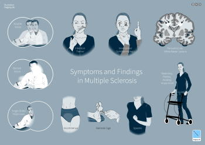
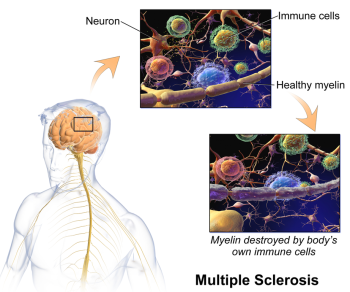

11.8: Multiple Sclerosis
Multiple sclerosis (MS) is a disease of the central nervous system that involves demyelination and neurodegeneration. MS is the most common disabling neurological disease of young adults. Symptom onset generally occurs between the ages of 20 and 40 years. It affects about 2.5 million people worldwide. Symptoms of MS include muscle weakness (often in the hands and legs), tingling and burning sensations, numbness, chronic pain, coordination and balance problems, fatigue, vision problems, and difficulty with bladder control (Figure 15). People with MS also may feel depressed and have trouble thinking clearly (NINDS, 2023b).

MS involves the loss of oligodendrocytes, the glial cells that generate and maintain the myelin sheath in the central nervous system. As discussed in Chapter 2, myelin makes up the brain’s “white matter” and insulates axons for efficient transmission of action potentials. The loss of oligodendrocytes leads to myelin thinning or loss, and as the disease progresses, the axons themselves deteriorate (as do cell bodies in gray matter). Without myelin, a neuron loses its ability to effectively conduct electrical signals. During the early stages of the disease, a repair mechanism known as remyelination occurs, but the oligodendrocytes are incapable of fully restoring the myelin sheath. With each subsequent attack, remyelination becomes increasingly ineffective, eventually leading to the formation of scar-like plaques around the damaged axons. These plaques are visible using magnetic resonance imaging (MRI) and can be as small as a pinhead or as large as a golf ball. They most commonly affect the white matter in the optic nerve, brain stem, basal ganglia, and spinal cord (Compston & Coles, 2008). The symptoms of MS depend on the location and extent of the plaques, as well as the severity of inflammatory reaction.

MS is considered an autoimmune disorder, in which the body’s immune system, which usually defends against viruses, bacteria, and unhealthy cells, attacks part of the body as if it were a foreign substance. In MS, immune cells mistakenly attack the body’s own oligodendrocytes. Apart from demyelination, another characteristic sign of MS is inflammation. Inflammation is caused by immune-system T cells that enter the brain after disruptions in the blood–brain barrier, often following infection. Beyond demyelination and inflammation, MS involves additional damage to neurons, and it is generally agreed that MS is driven by the interplay between immune response and neurodegeneration (Faissner et al., 2019; Pinel & Barnes, 2017).
MS affects people differently. A small number of people with MS will have a mild course with little to no disability, whereas others will have a progressive form that steadily worsens and increases disability over time. Most people with MS, however, have “relapsing-remitting MS” characterized by short periods of symptoms followed by long stretches of relative quiescence (inactivity). The disease is rarely fatal, and most people with MS have a normal life expectancy.
Epidemiology and risk factors. The exact causes of who gets MS are not fully known, but several environmental and genetic risk factors have been identified.
- Females are more frequently affected than males.
- Susceptibility may be inherited, and if one of your parents, siblings, or your twin had MS, you are at a higher risk. Dozens of genes are linked to vulnerability to MS, and most of these genes are associated with immune-system function.
- Certain infections are linked to MS, including Epstein-Barr, the virus that causes mononucleosis; note that only about 5% of the population has not been infected by Epstein-Barr, but they have a lower risk for developing MS.
- MS is more likely to develop in people with low levels of vitamin D (or who have very limited exposure to sunlight, which helps the skin produce vitamin D; Note: this is not a recommendation to sunbathe, due to significant skin-cancer risks). Researchers believe that vitamin D may help regulate the immune system in ways that reduce the risk of MS or autoimmunity in general.
- People from regions near the equator, where there is a great deal of bright sunlight, generally have a much lower risk of MS compared to people far from the equator, for example, in the U.S., Canada, and Europe.
- Finally, studies have found that people who smoke are more likely to develop MS and have a more aggressive disease course.
Treatments. Although MS has no cure, some conventional treatments can improve symptoms, reduce the number and severity of relapses, and delay the disease’s progression. The initial approved medications used to treat MS were modestly effective, though were poorly tolerated and had adverse side effects. Several medications with better safety and tolerability profiles have been introduced, improving the prognosis of MS (McGinley et al., 2021), especially for relapse-remitting MS, but treatment of the progressive forms of the disease remains unsatisfactory (Faissner et al., 2019). Many people with MS try some form of complementary health approach, including yoga, exercise, acupuncture, dietary supplements, and special diets (such as a diet low in saturated fats and high in polyunsaturated fatty acids, such as fish oils) (NCCIH, 2019).
Despite extensive ongoing research into treatments and causes of multiple sclerosis, one take-home message is clear: myelin is critical for a properly functioning nervous system, and damaged myelin leads to major issues in neural function and wellbeing (Eagleman & Downar, 2016).
Text Attribution:
This section contains material adapted from:
National Institute of Neurological Disorders and Stroke (NINDS) (2023b). Multiple Sclerosis. https://www.ninds.nih.gov/health-information/disorders/multiple-sclerosis Public Domain.
Media Attributions
- Symptoms in Multiple Sclerosis © Wikimedia is licensed under a CC0 (Creative Commons Zero) license
- Multiple Sclerosis © Wikimedia is licensed under a CC0 (Creative Commons Zero) license


Damage or loss of the myelin sheath surrounding axons in the brain.
glial cells that generate and maintain the myelin sheath
Regenerative process by which the myelin sheath around a demyelinated axon is restored
the branch of medicine that investigates the incidence, causes, and possible control of diseases